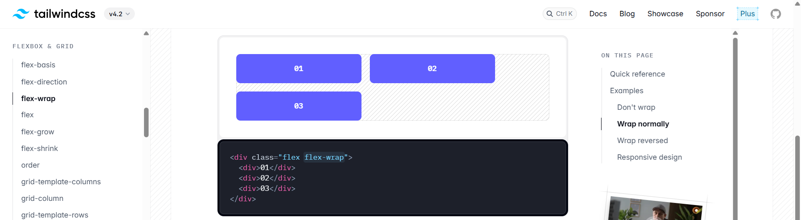
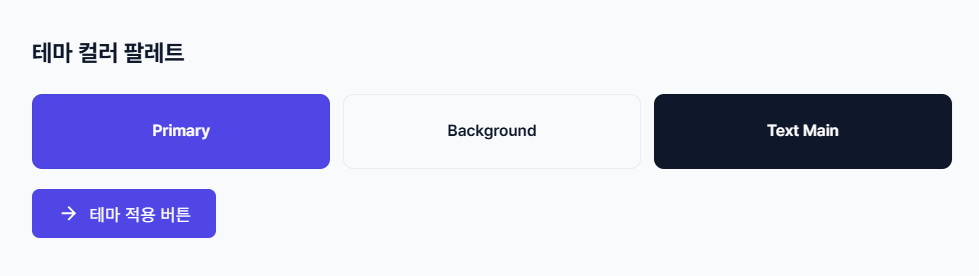
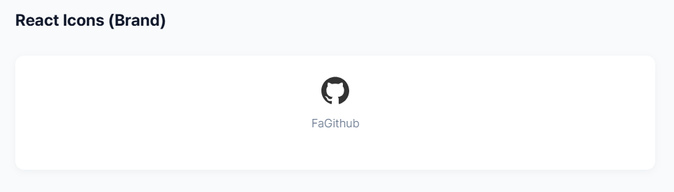
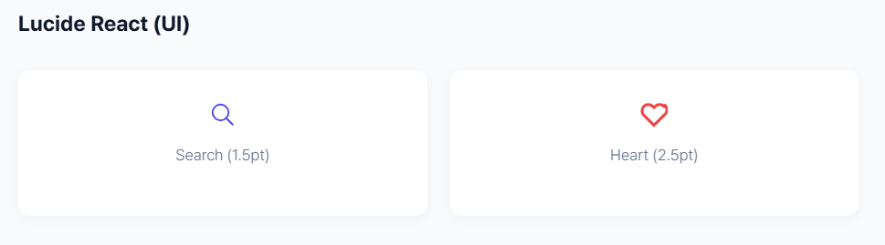

01
React에서 Tailwind CSS 사용하기

Tailwind CSS는 유틸리티 퍼스트 프레임워크로, 별도의 CSS 파일 작성 없이 클래스명만으로 신속한 스타일링이 가능합니다.
1.1. 설치 및 설정 (Vite 기준)
① 패키지 설치
npm install tailwindcss @tailwindcss/vite
② vite.config.js 설정
import tailwindcss from "@tailwindcss/vite"; export default defineConfig({ plugins: [react(), tailwindcss()], });
③ CSS 파일 import (src/index.css)
@import "tailwindcss";
02
폰트 및 색상 테마 설정
프로젝트의 일관성을 위해 @theme 블록에서 기본 시스템을
정의합니다.
2.1. Pretendard 폰트 및 테마 정의

/* 폰트 import 후 tailwindcss import */ @import url("...pretendard-dynamic-subset.min.css"); @import "tailwindcss"; @theme { --font-sans: "Pretendard", sans-serif; --color-primary: #4f46e5; --color-bg: #f8fafc; --color-text-main: #0f172a; }
03
리액트 아이콘 라이브러리
다양한 아이콘을 컴포넌트 형태로 간편하게 사용할 수 있는 도구들입니다.
3.1. react-icons

수많은 아이콘 팩을 통합 제공하며, 특히 브랜드 로고 사용 시 유용합니다.
import { FaGithub } from "react-icons/fa"; // 크기 및 색상 조절 <FaGithub size={24} color="#333" /> <FaGithub className="text-2xl text-gray-700" />
3.2. Lucide React

미니멀한 선형 스타일을 제공하며, 현대적인 UI 도구들의 표준 아이콘으로 채택되고 있습니다.
import { Search, Heart } from "lucide-react"; // 선 굵기 조절 가능 <Heart strokeWidth={1.5} /> <Search className="w-5 h-5" />
04
라이브러리 선택 가이드
실무 권장 사항:
- Lucide React: 일반적인 UI 버튼, 메뉴, 내비게이션 아이콘 (가볍고 세련됨)
- react-icons: 외부 서비스(Github, Google 등) 브랜드 로고 필요 시
보통 두 라이브러리를 모두 설치하여 역할에 맞게 혼합 사용하는 방식을 추천합니다.
Comments